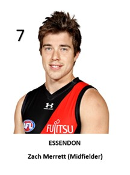
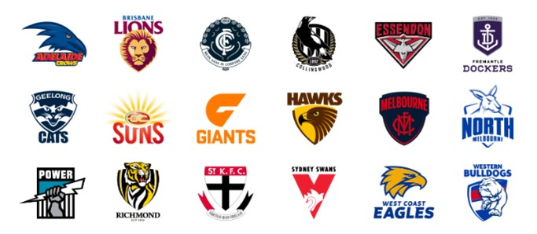

<!DOCTYPE html>
<html>
<head>
  <title>Project Idea</title>
  <style>
    body {
  background: linear-gradient(to bottom, #66ccff 0%, #66ff33 100%);
  font-size: 16px;
      }
      h1 {
    background-color:#ffff1a;
    text-align: center;
        }
      </style>
</head>
<body>
  <h1> Project Idea </h1>
<h3>Overview</h3>
<p> Project: IOS/Android application titled ‘Who’s That?’ – AFL edition (working title).</p>
<p>Who’s That? Will be an application that can be installed onto both Apple and Android devices.
The first version of the application will be based on the Australian Football League (AFL). The
application will act as a database of all the players in the AFL (organised by teams). Users will
use the application to determine the name (and regular playing position) of any player (in any
team) based on their shirt number. The aim of the application is to assist people (particularly
younger fans) with identifying AFL players. Player profiles can often be found on club web
sites or their own specific mobile applications, however these can often be difficult to navigate
and would require multiple programs to be open at the same time. </p>
<h3>Motivation</h3>
<p>There are numerous motivations for undertaking this project, such as:</p>
<p>1. Assisting younger fans to identify their favourite player/s (and those of opposition
teams).</br>
2. Storing all player data in one ‘easy to access’ location.</br>
3. To assist people that participate in fantasy football competitions with locating their
selected players on the field.</br>
4. Assist supporters with identifying players that change shirt numbers prior to a new
season.</br></p>
<p>The AFL averaged 4.2million viewers each round in the 2020 season (Sports Industry AU,
2020). An application such as ‘Who’s That?’ will likely be of great assistance to many of those
viewers, particularly with identifying players on teams other than the one supported by the
viewer. The idea first came to me as I was watching a game of football (pre-season match)
with my son and he kept asking me “Who’s That?’ and was surprised that many of his favourite
players have changed shirt numbers this season.</p>
<h3>Description</h3>
<p>The project would likely begin with the construction of a database that contains details for
every player in every team. These details would include a photo, name, shirt number and
playing position (see Figure 10). The user interface would then need to be designed in a
manner that is both visually appealing, but also easy to use. Visual representations of each
club’s logo (see Figure 11) would provide an effective method of navigating between teams
(and player lists).</p>
<figure>

<p>
<figcaption>
<i>Figure 10: Example of a Player Profile</i>
    </figcaption>
    </p>
</figure>
<br />
<br />
<figure>

<p>
<figcaption>
<i>Figure 11: Example User Interface</i>
    </figcaption>
    </p>
</figure>
<br />
<br />
<p>The application would require the user to select their desired team by pressing on the club
logo. A list of players (in numerical order) would then be presented to the user, as well as a
thumbnail photo. The user would then have the option of selecting a player for more
information, such as their regular playing position on the field. The application would require
updates at the end of each season as player leave and arrive each club, as well as a midseason update (if players are signed throughout supplementary draft periods). ‘Who’s That?’
is predominantly marketed towards younger fans or viewers new to the game, however it is
hoped that all football fans would find the application useful.</p>
<p>‘Who’s That?’ could possibly be marketed as a ‘free’ application, however a small annual
subscription fee may also be an effective option. If the program demonstrated early success,
then it may be possible to approach organisations such as the AFL itself. The early ideas for
this application are centred around the AFL, however there are options to extend the program
to other sports such as the English Premier League, National Basketball Association (NBA) or
A-League (sports that require players to have an individual number that is not dependent on
their position on the field). The application has a scope to include numerous extra features
such as visual representations of a football oval with drop down menus that allow users to
select their ideal teams.</p>
<p>AppSamurai (n.d.) argues that there are six necessary elements for designing a perfect mobile
application user interface, as well as six best practices for application designers.</P>
<br />
<table>
  <tr>
    <th></th>
    <th scope="col">Usage in ‘Who’s That?’</th>
  </tr>
  <tr>
    <th scope="row">Colour:</th>
    <td>The basic user interface is likely to be a white
    background with black text. The use of
    colour will be added through team logos and
    team-specific colour themes.</td>
  </tr>
  <tr>
    <th scope="row">Font:</th>
    <td>A basic and easy to read font will be required
    as there is limited text within the application.</td>
  </tr>
  <tr>
    <th scope="row">Icons:</th>
    <td>Most icons will be navigation icons that take
   the user to club or player-specific display
   windows.</td>
  </tr>
  <tr>
    <th scope="row">Illustrations:</th>
    <td>To assist with player identification there will
   be a current photo of each player.</td>
  </tr>
  <tr>
    <th scope="row">Brand Design:</th>
    <td>The ‘Who’s That?’ logo will be carefully
   inserted on the main page of the application.</td>
  </tr>
    <th scope="row">Navigation:</th>
    <td>Navigation is made simple via navigational
   icons.</td>
  </tr>
</table>
<br />
<br />
<table>
  <tr>
    <th></th>
    <th scope="col">Usage in ‘Who’s That?’</th>
  </tr>
  <tr>
    <th scope="row">Consistency:</th>
    <td>Each version of ‘Who’s That?’ will follow a
   consistent theme e.g., different applications
   for each sport.</td>
  </tr>
  <tr>
    <th scope="row">Simplicity:</th>
    <td>The application will only require the user to
   press on their desired logo/image.</td>
  </tr>
  <tr>
    <th scope="row">Only include essential information:</th>
    <td>The decision was made to only include the
   information that AFL supporters are likely to
   value such as name, number, and position.
   If the demand were there, height and weight
   could be added in future versions, however
   data such as the players date of birth or
   hometown are likely to be unnecessary for
   the majority of users.</td>
  </tr>
  <tr>
    <th scope="row">Avoid Ambiguity:</th>
    <td> Any extra elements in the application will be
    closely linked to the main data. The idea of
    the football field diagram with drop-down
    player insertion options would be separate
    from the player profiles.</td>
  </tr>
  <tr>
    <th scope="row">Flexibility:</th>
    <td>The application will include clear options to
   close the current display window to eliminate
   user frustration and allow them to quickly
   navigate between profiles.</td>
  </tr>
    <th scope="row">Reusability:</th>
    <td>It is hopes that most users would find the
   application useful and continue to use it
   while watching games (either on television or
   at the ground).</td>
  </tr>
</table>
<br />
<br />
<h3>Tools and Technologies </h3>
<p>I have started researching the numerous application design software packages available and
I believe that using Adobe XD would be an appropriate starting point for my project (see Figure
6). Adobe XD is part of the wider Adobe software package which would give me access to a
variety of graphic design and animation tools. Adobe XD is designed to assist developers with
application and web design, as well as provide collaboration opportunities with other
developers (Adobe, 2021). The application will also need to utilise a Database Management
System for storing the player data. Software such as ‘Knack’ offers reliable cloud storage
options, as well as highly customisable database solutions (Goodcore, 2019).</p>
<h3>Skills Required</h3>
<p>I will need to develop an understanding of how to use many programs included in the Adobe
suite, with a particular emphasis on Adobe XD. Many of these skills will relate to graphic design
and the user interface of the application. It will also be beneficial to learn how to use software 18
such as Adobe Photoshop to assist with the design of aspects such as the ‘Who’s That?’ logo.
It is likely that the most complex skills that will be required to create this application with relate
to computer programming. Java is the most popular programming language used by
developers of web and Mobile applications (Magneto, n.d.). Another option is ‘Swift’ which is
designed for Apple operating systems and is marketed as easy to read and write (Magneto,
n.d.). Some of these skills are likely to be covered within the Bachelor of Education course (as
well as specific electives). There are also numerous online tutorials and programming courses
that can be readily accessed to assist potential developers learn programming languages such
as Java.</p>
<h3>Outcome</h3>
<p>If the project is successful ‘Who’s That?’ will be a functional application available on both the
App Store and Google Play store (with the possibility of a web-based version). The application
would be used by a variety of AFL fans and will assist them with identifying specific players.
The development of this application will undoubtedly assist young children comprehend the
commentary during AFL matches, as well giving Fantasy Football participants a useful tool to
use during games. If ‘Who’s That?’ is successful it will also provide options to extend the
program to other sports, and therefore open new markets.</p>
<br />
<form action="index.html">
  <button> Home </button>
  </form>
</body>
</html>
